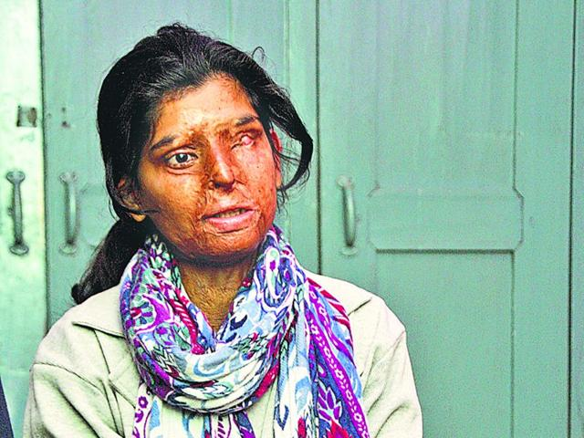

IF YOU CAN,GIVE THEM
IF YOU CAN,GIVE THEM
SOME MOMENTSOF
HAPPINESS AND JOY
IF YOU CAN,GIVE THEM
The aim of our website is to make sure that every citizen of india should feel safe and secure whether he/she is a small child or an adult man or women.Therefore we provide a number of best ADOPTION CENTERS, OLDAGE HOME,WOMEN NGO thus making sure that it becomes easy for a person to help a person in need
We all know that every child on earth is loved by god and its the destiny of every human being that he/she lives but apart from the destiny there are some childrens some pure souls who have been brought into this beautiful world but have no one who can take care of them the reason behind this situation that they go through is either the financial condition of their biological parents or child trafficking there are so many smiles around us who have gone through miserable condition.It’s unknown exactly how many babies are abandoned each year in India, with some sources reporting up to 11 million children,but it is known that over 90% of them are girls. Babies are abandoned for many reasons: victims of rape or unmarried mothers fearing recriminations, being unable to financially support a child or simply not wanting another girl in the family.
So if you can give a soul an home to live and a life to spend with merriment by clicking on the button bellow

Every human being in this world who has born has life to see many ups and down they pass through their childhood, their adult hood and then they grow older but sometime what happens is our loved ones turn their faces towards us they start feeling that their old parents are becomming burden on them day by day so they leave them in old age home's and never come back to see thier parents to love them again but they have to realize that they are also going to get older one day . India it is recorded that almost 1lakh old people die because they have no one to take care of them or their childrens have flew to abroad and never returned back.So to avoid these situations there are old age homes all across india to take care of our parents.
So if you think that you are unable to take care of your parents click on the button bellow and search the best home for your parents where they can be taken care off and give them some moments of happiness for the rest of thier life.

Women,a women has different roles and different stages in her life that she goes through, she can be someones mother sister daughter and endless roles that she performs throughout her life, but sometimes the women's of india has to suffer through may abuses such as acid attack,sexual assault,rape,harrasment and the list goes on.It is noted that almost everyday there are hundreds of rape cases reported and almost thousands of abuses that happens with womens.We need to stop this and make sure that every women in our surrounding feel free and save to move out therefore there are numerous women ngo's that have been established across india so that hamari betiya surakshit reh paye and our website will show you some of the best ones.
So if you see any abuse happening with a women in your surrounding find the best women ngo with the help of our services
Our team make sure that every user who uses our website should have a good user experience, and should find a good adoption center if a couple is looking for their child or if a son is looking for a good old age home for his parents or else a women is looking for a safe shelter for herself we make sure that no one in india should be alone without any help and with no place where he /she can feel safe click on the button below to know more about us.
Our team make sure that every user who uses our website should have a good user experience, and should find a good adoption center if a couple is looking for their child or if a son is looking for a good old age home for his parents or else a women is looking for a safe shelter for herself we make sure that no one in india should be alone without any help and with no place where he /she can feel safe. Now during this process if you feel any difficulty while choosing the home for you loved ones you can contact anyone of our team memebrs and we will guide you to the best we can.Below is the contact button of our team memebrs
Our team make sure that every user who uses our website should have a good user experience, and should find a good adoption center if a couple is looking for their child or if a son is looking for a good old age home for his parents or else a women is looking for a safe shelter for herself
SAFEHANDS 161 B/4, 3rd Floor, Gulmohar House, Yusuf Sarai Community Centre New Delhi - 110049, Delhi, India Tel: +91-11-43123700